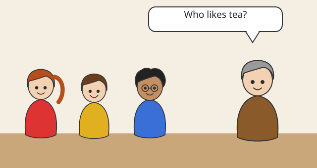

Who likes tea? Wer fragt ohne Helfer?
Mit einem KI-Tutor lernen
Ein KI-Tutor erklärt dir diese Seite und hilft dir bei den Aufgaben. Wähl deinen Assistenten:
Mit Claude öffnen Mit ChatGPT öffnen Mit Mistral Vibe öffnen
Du nutzt dein eigenes Konto beim Anbieter. Der Assistent ist kein Angebot von lernapps.net: lernapps liefert nur Inhalte und Aufgaben. Die Wahl gilt für alle Seiten, nur auf diesem Gerät.
Mr Hill fragt die Klasse

Von links: Ellie (roter Pferdeschwanz), Peter (gelbe Jacke) und Amir (Brille) melden sich. Rechts fragt Mr Hill (graue Haare).
Quelle: eigene Zeichnung. Lizenz: CC-BY-4.0.Mr Hill fragt die Klasse: „Who likes tea?“ Die Kinder überlegen.
Aufgabe
Lösung
Ellie. richtige Antwort
Gefragt ist, wer Tee mag. Die Antwort nennt die Person.
In the classroom.
Das wäre eine Antwort auf where. Gefragt ist aber, wer etwas tut.
On Friday.
Das wäre eine Antwort auf when. Gefragt ist aber, wer etwas tut.
Who fragt nach einer Person. Die Antwort nennt die Person.
Mehr dazu: Lernlandkarte Englisch · Subjekt- und Objektfragen
Das kannst du danach: Du fragst nach dem Subjekt ohne do und unterscheidest solche Fragen von Fragen nach dem Objekt.
Das Fragewort ersetzt das Subjekt
Peter wundert sich: In „Who likes tea?“ fehlt der Helfer! Das Fragewort Who liegt dort, wo sonst das Subjekt liegt. Die blaue Subjektkarte wird zur türkisen Fragewortkarte. Dann braucht der Satz keinen Helfer. Fragst du dagegen nach dem Objekt, bleibt der Helfer: What does Ellie like?

Frage nach dem Objekt mit Helfer und Frage nach dem Subjekt ohne Helfer.
Quelle: eigene Zeichnung. Lizenz: CC-BY-4.0.| Aussage | Frage nach dem Subjekt | Frage nach dem Objekt |
|---|---|---|
| Peter eats pizza. | Who eats pizza? | What does Peter eat? |
| Sophie reads a book. | Who reads a book? | What does Sophie read? |
Merke
Wer tut etwas? Kein Helfer, das Verb mit -s: Who likes tea? Was oder wen? Der Helfer bleibt, das Verb geht ohne Endung: What does Ellie like?
| Wort oder Ausdruck | Bedeutung |
|---|---|
| who | wer |
| what | was |
| play | spielen |
| like | mögen |
| live | wohnen |
| eat | essen |
| football | Fußball |
| tea | Tee |
| pizza | Pizza |
| here | hier |
| at school | in der Schule |
| at home | zu Hause |
| lunch | Mittagessen |
| read | lesen |
| watch | anschauen |
| film | Film |
| study | lernen |
| English | Englisch |
| Mr Hill | Mr Hill (der Englischlehrer) |
| with | mit / bei |
| in the park | im Park |
| on Saturday | am Samstag |
Übung
Aufgabe
Lösung
Who plays football? richtige Antwort
Who ersetzt das Subjekt, darum steht kein Helfer da.
What does Amir play?
Hier fragt What nach dem Objekt. Der Helfer does zeigt es an.
Who lives here? richtige Antwort
Who ersetzt das Subjekt, darum steht kein Helfer da und das Verb hat das s.
What does Amir like?
Hier fragt What nach dem Objekt. Der Helfer does zeigt es an.
Fehlt der Helfer, fragt die Frage nach dem Subjekt. Steht ein Helfer da, fragt sie nach dem Objekt.
Mehr dazu: Lernlandkarte Englisch · Subjekt- und Objektfragen
Aufgabe
Wähle die richtige Form.
Tipp
Fragt das Wort nach dem Subjekt, steht kein Helfer da. Fragt es nach dem Objekt, kommt der Helfer.
- Wer lernt Englisch? → Who … English?
- Was isst Mr Hill? → What … Mr Hill eat?
- Wer spielt im Park Fußball? → Who … football in the park?
- Was lernt Ellie? → What … Ellie study?
Lösung
- Who studies English?
- What does Mr Hill eat?
- Who plays football in the park?
- What does Ellie study?
Aufgabe
Schreibe die ganze Frage.
Tipp
Wer tut etwas? Dann ohne Helfer. Was oder wen? Dann mit Helfer.
- who · like · football
- what · Peter · like
- who · eat · lunch · at school
- what · Sophie · eat · at home
Lösung
- Who likes football?
- What does Peter like?
- Who eats lunch at school?
- What does Sophie eat at home?
Aufgabe
In jeder Frage steckt ein Fehler. Schreibe die Frage richtig.
Tipp
Zähle, ob in der Frage ein Helfer steht, und frage dich, ob er stehen soll.
- Who does watch a film?
- What Amir eats?
Lösung
- Who watches a film?
- What does Amir eat?
Aufgabe
Hör zu und schreibe, was du hörst.
- KI
- KI
- KI
Lösung
- Who likes pizza at school?
- What does Amir like at home?
- What does Sophie watch at school?
Wer tut was?
Aufgabe
Hör zu, sprich nach und nimm dich auf. Vergleiche dann mit dem Original.
Tipp
Hör die Frage zuerst. Sprich dann langsam nach. Bei Who lives hörst du das s.
- Who eats lunch with Ellie?KI
- What does Mr Hill read at home?KI
- Who lives with Sophie?KI
Zum Aufnehmen braucht diese Aufgabe JavaScript. Die Beispiele kannst du auch ohne anhören.
Lösung
- Who eats lunch with Ellie?
- What does Mr Hill read at home?
- Who lives with Sophie?
Offene Aufgabe
Peter schreibt zwei Quizfragen. Schreibe eine Frage mit Who ohne Helfer und eine Frage mit What und Helfer. Beide Fragen handeln von Sophie, Ellie, Peter oder Amir.
Eine gute Antwort enthält:
Lösung
Who plays football on Saturday? What does Ellie eat at school?
Wie es weitergeht
Das Quiz läuft. Ellie fragt Sophie: „Who do you talk to?“ Das Wort to bleibt am Ende hängen. Wie das geht, zeigt die nächste Seite.